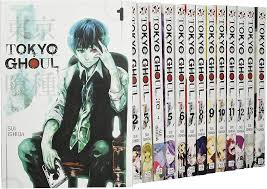
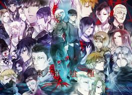
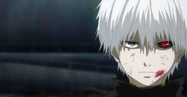

Ken Kaneki je glavni junak popularnog animea Tokyo Ghoul, koji je postao jedan od najikoničnijih likova u svetu animea.
Na početku serije, Kaneki je običan mladić, student književnosti, koji vodi miran život u Tokiju. Međutim, njegov svet se
potpuno menja kada preživljava napad od strane ghoula – zle, kanibalske rase koja se hrani ljudskim mesom. Nakon što je teško
povređen, Kaneki je spasavan kroz transplantaciju organa, a donirani organi pripadaju upravo jednom ghoulu, što ga transformiše
u pola-ghoula, pola-ljudi. Ova prekretnica postavlja ga na put samospoznaje i preživljavanja u svetu u kojem je postao stranac.
Kroz seriju, Kaneki se suočava sa svojim novim identitetom i sposobnostima, balansirajući između dve suprotstavljene strane –
ljudske i ghoul. Ova unutrašnja borba čini ga vrlo dubokim i kompleksnim likom, jer ne samo da mora da se bori sa spoljnim
neprijateljima, već i da pomiri svoje dve prirode. Kako se radnja razvija, Kaneki postaje sve snažniji, ali i psihički složeniji,
suočavajući se sa moralnim dilemama, gubicima i pitanjima identiteta. Njegova transformacija kroz seriju, od nesigurnog mladića do
odlučujućeg vođe, ostavlja snažan utisak na fanove.
Kaneki je prepoznatljiv i po svom izuzetnom dizajnu i simbolici. Njegovo karakteristično belilo crne kose, zajedno sa masivnim,
crvenim kanibalističkim okom, koje se pojavljuje kada pređe u ghoul stanje, postalo je ikonično za lik. U drugoj sezoni i nastavcima
serije, Kaneki nosi i crni kaput koji dodatno pojačava njegov misteriozni i ozbiljan izgled. Uprkos svojim borbama i emocionalnim izazovima,
Kaneki ostaje junak koji pokazuje snagu, odanost i nepopustljivost, što ga čini jednim od najsnažnijih i najvoljenijih likova u anime industriji.


